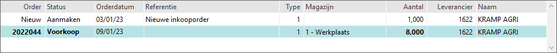

Dubbel klik op de 1e regel, bij een nieuwe order. d.w.z. in de kolom order staat nieuw.

Als bij orderingave een artikel niet voorradig is of bij onvoldoende voorraad, is het mogelijk om direct een BtB inkooporder (Back-to-Back) aan te maken.
Om de inkooporder in te geven, doorloopt u de volgende stappen:
Dubbel klik op de 1e regel, bij een nieuwe order. d.w.z. in de kolom order staat nieuw.
De inkooporder of bestelregel is aangemaakt.
Daarnaast zijn de volgende knoppen beschikbaar, indien ingesteld:
Online zoeken
Bij online zoeken wordt gekeken of het artikel bij een andere leverancier aanwezig is.
Om online info te zoeken, doorloopt u de volgende stappen:
Kies voor de knop Online zoeken.

Een artikel regel, van de leverancier wordt toegevoegd/zichtbaar.

Bij dubbelklik op deze regel, verschijnt melding Leverancier opslaan bij artikel?

Kies voor de knop Ja.
Bij het artikel, wordt op tabblad Leverancier, de leverancier toegevoegd.
Als deze leverancier geselecteerd wordt, kan het artikel besteld worden.
Update gegevens
De Netto inkoopprijs van de leverancier wordt bijgewerkt, indien beschikbaar.
D.m.v. de knop Details kan gecontroleerd worden of het artikel reeds op een bestaande d.w.z. openstaande inkooporder aanwezig is.
Wanneer wordt het artikel vet gedrukt?
Intern Dit werkt alleen als ik een artikel 2x op dezelfde order zet en dan wordt het bij de 2e regel vet aangegeven maar wanneer ik hetzelfde artikel op een andere werkorder of verkooporder zet dan wordt deze helemaal niet vet weergegeven.
Bij een Kleine machine er als de inkooporder besteld is voorkoop te staan, in de kolom status.

Als voorkoop geselecteerd is, wordt de inkooporder gesplitst in stukje voorkoop / bestelling en BTB order.
Bijv. er waren er 8 besteld en er wordt 1 BtB verkooporder toegevoegd, het aantal besteld wordt dan 7 bijv.:
| Artikelcode | Besteld | Inkoop aantal | Bestemd voor |
|---|---|---|---|
| X | 7 | 7 | |
| X | 1 | 1 | VO-<nr> |
Opmerking: Het order aantal mag hierbij niet groter zijn dan het (nog niet gekoppelde) inkooporder aantal.
Als de order gekoppeld is aan een bestelde inkooporderregel, kan deze order regel niet verwijderd worden. De melding Verwijderen regel is niet mogelijk, gekoppelde inkooporderregel al definitief verschijnt.
In onderstaand geval, is het aantal gewijzigd op de werkorder van 1 naar 2. Er worden er dan 2 besteld i.p.v. 1. Er is al een bestelregel aanwezig met aantal 1.

Onderstaand geldt alleen, als er geen bestelregels gebruikt worden:
Het scherm Inkooporder details verschijnt.
Wijzigen aantal
Als het aantal op de order gewijzigd wordt bijv. van 1 naar 3, moet dit ook bevestigd worden op de inkooporder d.m.v. de knop Opslaan.
Verwijderen
Als de eerste regel (nieuw) wordt geselecteerd, wordt de inkooporder regel verwijderd, van de openstaande inkooporder.
Als de inkooporder geen regels bevat, wordt ook de inkooporder verwijderd.
Als de inkooporder al besteld is, verschijnt er geen BtB pop-up melding 'Koppeling xxx order met inkoop order'.
Instellingen voor de knop Online zoeken:
Bij de scherm Koppeling verkoop/werkorder met inkooporder is het volgende verbeterd:
De kolom status kan zijn:
Met één druk op de knop Opslaan kan een inkooporder(regel) of bestelregel aangemaakt of toegevoegd worden.
| Omschrijving | 'Centraal inkooporders aanmaken' = ja | Inkooporders |
|---|---|---|
| Inkoop via | Bestelregels (centraal) | Inkooporders |
| Kolom Referentie | Nieuwe bestelregel | Nieuwe inkooporder (regel) |
| Info | Zie Goedkeuren besteladvieslijst |
Gerelateerde onderwerpen
Copyright ©